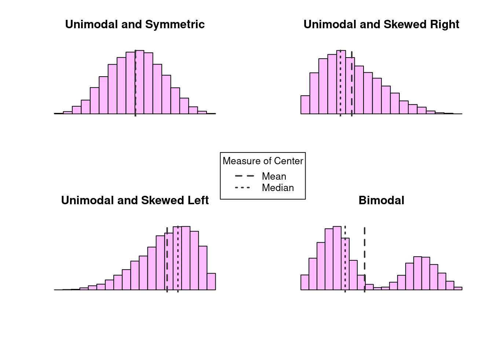
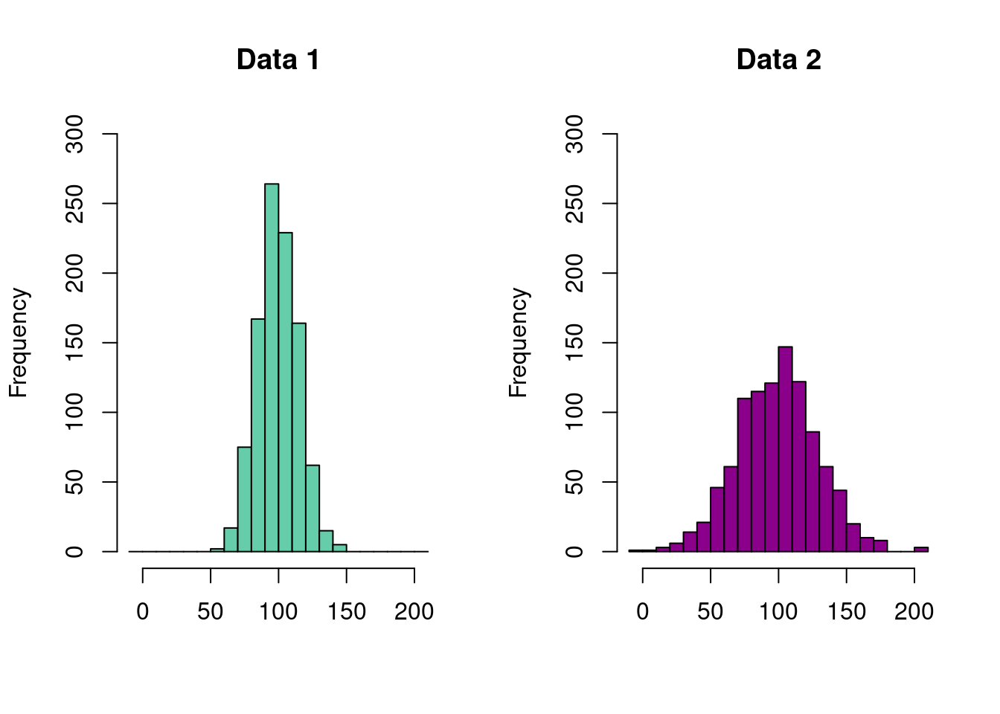

3 Probability Distributions
- Understand how a distribution represents a random process that creates data that is then observed
- Understand how the parameters of a distribution govern how the data is generated [and with what probability]
- Be able to identify which distributions underlying a given real world random process.
In the previous chapter, we introduced the idea of random processes, situations in which the outcome can not be determined perfectly in advance. We encounter random processes all the time in our lives, from the exact amount of time it takes to get to class from your home, to determining the winner of a football game [maybe simpler examples?]. In any case, the random process is defined in terms of the collection of possible events and their associated probabilities. What is needed is a method for relating these events to their probabilities, motivating the goal of this chapter.
[maybe have new goals given updated (limited) scope of the chapter]
notes:
- removed pretty much all technical stuff
- removed idea of pdf generating stuff. leave that to simulation chapter, if at all
- instead of continuous/discrete, just doing binomial/normal. bring up pmf/pdf?
- remove idea of mean/variance. Just limit pdf to relationship between events and probs
3.1 Introduction to Probability Distributions
Most simply, a probability distribution (often just called a distribution) is a method for taking a possible event as input, and giving us the corresponding probability as output; the corresponding probability tells us how likely it is that the specific event will occur, out of all of the possible events.
- Understand how a distribution represents a random process that creates data that is then observed
- Understand how the parameters of a distribution govern how the data is generated [and with what probability]
- Be able to identify which distributions underlying a given real world random process.
Probability Distribution: A method for assigning probabilities to all possible events
Distribution Parameters: Values associated with a probability distribution that determine how the data is generated
3.2 Binomial Distribution
In the previous chapter, we examined the possible events and associated probabilities with flipping a coin three times, where each side could land with equal probability. In particular, we noted the collection of possible events was given by
\[\mathcal{S} = \{HHH, HHT, HTH, THH, TTH, THT, HTT, TTT\},\] and the respective probabilities for the number of heads were
| # Heads | Probability |
|---|---|
| 0 | 1/8 |
| 1 | 3/8 |
| 2 | 3/8 |
| 3 | 1/8 |
Might we consider this table a probability distribution? Perhaps, as it does give us a method for determining a probability for any given event. However, the usefulness of such a method comes into question as our experiment changes. What if instead we had flipped our coin 50 times? Or 100? What is needed instead is a method that is more robust to changes in the experiment.
Here, we introduce the binomial distribution, a probability distribution in which:
- The total number of trials (or flips) is fixed in advance at some value, \(n\)
- There are two possible events or outcomes within each trial
- Each trial has the same probability of success (heads), which we will denote \(p\)
- Each trial is independent of all other trials. Whatever result occurs on the first flip will have no impact on the second, and so on.
Notationally, the binomial distribution is expressed as \(X \sim Bin(n,p)\), or “The random variable \(X\) follows a binomial distribution with \(n\) trials and probability of success, \(p\).” We can also express this with the following formula:
\[ P(X = x) = \binom{n}{x} p^x (1-p)^{n-x} \] where \(n\) and \(p\) are the parameters of our distribution, and \(X\) can take any of the values \(x = 0, 1, \dots, n\). Perhaps unfamiliar to us here is the leading term in the expression above, \(\binom{n}{x}\), called the binomial coefficient, which can be written as
\[ \binom{n}{x} = \frac{n!}{x!(n-x)!} \] where \(n! = n \times (n-1) \times \dots \times 2 \times 1\) (known as a factorial). By convention, we have that \(0! = 1\). In words, we might say \(\binom{n}{x}\) as “\(n\) choose \(x\)” or “given that we have \(n\) total trials, in how many ways might the outcome \(x\) appear?” While this may seem daunting at first, the need for it is quite reasonable. Consider again our coin flipping experiment, where the possible outcomes were listed as
\[ \mathcal{S} = \{HHH, HHT, HTH, THH, TTH, THT, HTT, TTT\}. \]
If we are interested in determining the probability of observing two heads, we note that there are multiple ways in which this occurs. We might ask ourselves, “If we have \(n = 3\) flips, how many ways might we choose \(x = 2\) heads?” Writing this with our binomial coefficient, we find that
\[ \binom{3}{2} = \frac{3!}{2!(3-2)!} = \frac{3 \times 2 \times 1}{2 \times 1 \cdot(1 \times 1)} = \frac62 = 3, \] and indeed, 3 is precisely the number of outcomes in \(\mathcal{S}\) in which two heads occur.
Now that we have the number of ways in which we might have two heads, we move on to determining the probability of such an event. Being a fair coin, we know that the probability of heads is \(p = 0.5\), and because these events are independent, we know that the probability \(P(HHT) = P(HTH) = P(THH)\). Consequently, we need only determine the probability for one of them and then multiply this number by 3, the number we found from the binomial coefficient. See that
\[ \begin{align*} P(HHT) &= P(H) \cdot P(H) \cdot P(T) \\ &= \underbrace{(0.5)(0.5)}_{P(H) P(H)} \cdot \underbrace{(0.5)}_{{P(T)}} \\ &= 0.125 \end{align*} \] Putting these pieces together, we arrive precisely at the binomial distribution:
\[ \begin{align*} P(X = 2) &= \binom{3}{2} (0.5)^2 (0.5)^{3-2} \\ &= 3 \times 0.125 \\ &= 0.375 \end{align*} \] which we note is precisely the value we computed [(in the table above)/(in chapter 4)]
- Using the binomial probability distribution above, verify the correct values for \(X = 0,1,2,3\) in table [number]
3.2.1 possibly tiny aside with binomial where we pull marbles from bag so that probability is not 1/2
ALSO need to do cumulative probabilities. “probability of AT LEAST two heads”
visualizing important? if so, can include right before app (but then do it after the exercises), then make new exercises using app
and if so, demonstrate with like 3/4 then do exercises with 2/3 (or w/e)
Here is the app related to the exercise
[Include binomial app here. See that clicking bars adds to something. Explain changing settings, clicking bars, selecting different things. Come up with exercises below, i.e., prob that even if n = 8, prob if even n = 4, etc.]
3.2.2 Plotting the PMF
It is often useful to create a visual representation of a pmf as well. Doing so quickly gives us an idea of where data tend to aggregate and how the data are dispersed. Below are two plots representing two different sets of parameters for the binomials distribution. What do you notice in how they differ? How are they similar? What impacts do the different parameters have on the distribution of the data?

Of particular note here, we recall from the previous chapter that the sum of all possible probabilities must be equal to one. Visually, this is represented by the total area of the bars in our plot. Given that our bars our rectangles, we can find the area by considering that the width of each bar is equal to 1, and it’s height is given by the probability of \(X = x\), which can be found using the PMF. On the left hand side, for example, from left to right, we have
\[ \begin{align} \text{Total Area } &= \text{ \{Area of Heads = 0\} + \{Area of Heads = 1\} + } \\ & \quad \ \ \text{\{Area of Heads = 2\} + \{Area of Heads = 3\}} \\ &= (1 \times P(X = 0)) + (1 \times P(X = 1)) + (1 \times P(X = 2)) + (1 \times P(X = 3)) \\ &= 0.125+0.375+0.375+0.125 \\ &= 1 \end{align} \] If, say, we are interested in the probability that \(X = 2\) or \(X = 3\), we can add the area of the two corresponding bars. In this case, we find \(P(X = 2, 3) = 0.75\).
[Include binomial app here. See that clicking bars adds to something. Explain changing settings, clicking bars, selecting different things. Come up with exercises below, i.e., prob that even if n = 8, prob if even n = 4, etc.]
3.3 Normal Distribution
Included below are histograms of the depth of Lake Huron from 1875-1972, the annual flow of the Nile river in cubic meters from 1871-1970, and the height in feet of 31 black cherry trees. What do these histograms seem to have in common?

What we see here are examples of a normal distribution (also known as a bell curve), one of the most ubiquitous distributions in all of statistics. The normal distribution is characterized by the “bell shape” that is symmetric about it’s mean [but maybe don’t say mean].
Like the binomial, the normal distribution is characterized by two parameters, \(\mu\) and \(\sigma^2\), representing the mean and the variance, respectively. The mean value, \(\mu\), indicates the location of the peak on the x-axis, whereas the variance, \(\sigma^2\), indicates the amount of dispersion about the mean. A random variable \(X\) that follows a normal distribution can be expressed \(X \sim N(\mu, \sigma^2)\), or, “The random variable \(X\) follows a normal distribution with mean \(\mu\) and variance \(\sigma^2\).” The formula for the normal distribution is given as
\[ \begin{align*} f(x) = \frac{1}{\sqrt{2 \pi \sigma^2}} \ e^{- \frac{(x-\mu)^2}{2\sigma^2}}. \end{align*} \]
Consider the two normal distributions below, with different values for \(\mu\) and \(\sigma^2\). Although they are centered at different locations and have different amounts of dispersion around the mean, they are both bell-shaped curves characteristic of the normal distribution:

Given that the normal distribution appears so frequently in statistics, it is common practice to standardize a normal distribution so that it has a mean value of \(\mu = 0\) and variance \(\sigma^2 = 1\). A normal random variable that has been standardized is called a standard normal distribution and is often written \(Z \sim N(0,1)\). We can consider again the histograms above, once they’ve been standardized:

Unlike the binomial distribution, in which there are \(n\) possible values that our random variable can take, the normal distribution represents a random variable that is continuous over a range of values. Instead of asking the probability of a specific value, say, \(Z = 0\), probabilities are given as the area under the curve for a certain interval. We might ask, “What is the probability that \(Z\) is one standard deviation (\(\sigma\)) away from 0?” pr perhaps, “What is the probability that \(Z < 0\)?”

Because probabilities for continuous distributions are described as areas under the curve, their values are computed with integrals. [do we introduce probability tables or just go with the app?]
also maybe include
- subtract cdf?
- probability that |Z| > z?
- what else?
3.4 Measuring Heights
Often, our data will not fit nicely into a finite number of discrete categories, leaving us with continuous data that are described with a probability distribution function, or pdf. As our data does not fit neatly into categorical bins, many of the techniques described above will not work in the same way here. Rest assured, the idea is exactly the same. While we will spare the technical details here, interested readers may consider what follows to be analogous to the cases presented above when the number of “bins” becomes infinite.
Our motivating example here will consider the process of determining the height of individuals within a population. Unlike the binomial distribution, where the underlying process and associated parameters were easily teased apart, the components here are less obvious, and some care will be needed to identify them. Height data, like many things in the natural world, tend to follow a symmetric distribution, where most observations tend to gather around a mean value, with observations deviating from the mean being equally likely to fall some distance above the mean as below, their frequencies becoming smaller as this distance increases. That is to say, if the mean height of a population is 68 inches, an individual is equally likely to be 67 inches tall as they are 69 inches. Similarly, an individual is equally likely to be 64 inches as they are 82. However, given their proximity to the mean value, an individual is far more likely to be either 67 or 69 inches (1 inch from the mean) than they are to be either 64 or 82 inches (4 inches from the mean).
The process described above describes what is known as a normal distribution, colloquially referred to as a “bell curve.” There are a number of properties that together characterize a normal distribution
- There are two parameters for the normal distribution, the mean \(\mu\) (pronounced “myu”) and the variance \(\sigma^2\) (“sigma squared”)
- \(\mu\) is the mean, or expected value, and represents the most probable value of the distribution. That is, observations from a normal distribution are more likely to be close to \(\mu\) than away from it
- Observations are equally likely to be the same magnitude above \(\mu\) as they are below it. In other words, the distribution is centered around \(\mu\). We see this concept expressed in everyday language when we offer estimates of some value: “The cost is ‘x,’ plus or minus ‘y’”
- The second parameter, \(\sigma^2\), describes how concentrated values are around the mean. The smaller the value of \(\sigma^2\), the more observations that will be close to \(\mu\). Likewise, larger values of \(\sigma^2\) result in higher dispersion, or more values further away from \(\mu\).
Notationally, if a random variable \(X\) follows a normal distribution with mean \(\mu\) and variance \(\sigma^2\), we write \(X \sim N(\mu, \sigma^2)\). A special case of this that will be explored in following chapters is known as a standard normal distribution, which arises when the mean value is \(\mu = 0\), and the variances is \(\sigma^2 = 1\). This distribution is often written with its own letter \(Z\), as in \(Z \sim N(0, 1)\).
Another critical difference between a continuous and discrete random variable is the way in which we determine probability. In the discrete case, we could enumerate all of the events and determine their relative frequency. Alternatively, we could run a simulation and simply count how often each outcome occurred. In the continuous case, however, there is no finite set of possibilities (i.e., somebody could be 68" tall, 68.1" tall, 68.01", …), and any attempts to enumerate these will only terminate in frustration; we will determine the implications of this below. In the meantime, however, we will rejoice in knowing that a normal distribution can be mathematically represented by it’s probability function:
\[ f(x) = \frac{1}{\sqrt{2\pi \sigma^2}} \ e^{- \frac{(x-\mu)^2}{2\sigma^2}} \] As we can see, the pdf contains both of the distribution parameters, \(\mu\) and \(\sigma^2\). As we saw at the beginning of the chapter, different values for these parameters gives us different curves:

Of particular interest above, notice how the value of \(\mu\) changes where the data are aggregated, and similarly, note how larger values of \(\sigma^2\) results in a greater amount of dispersion.
Let’s now return to the issue of determining the probability of a particular event. In the discrete case, we saw that we could examine the plot of the pmf and multiply the width of each bin (which was equal to 1), with the height of the bin, given by the pmf While the pdf here does indeed give us the “height,” we quickly run into an issue when considering the width: the only way we can have an “infinite” number of bins for each outcome is to assign each bin a width of 0. As such, the probability of any particular event is unintuitively assigned a probability of zero.
This apparent shortcoming can thankfully be remedied with the tools of calculus. Where discrete observations allow us to take a sum, the analogous case for continuous intervals is satisfied by the use of the integral. As it no longer makes sense to consider the probability of specific events (all of which will be zero), we instead consider the probability that an observation falls within a range of events. For example, if we have a random variable with \(X \sim N(\mu, \sigma^2)\), the probability that \(X > 3\) can be written
\[ P(X > 3) = \int_3^{\infty} \frac{1}{\sqrt{2\pi \sigma^2}} \ e^{- \frac{(x-\mu)^2}{2\sigma^2}} \ dx \] Similarly, if we were curious to know the probability that \(X\) was between a range of values, say \(2 < X < 5\), we would write
\[ P(2 < X < 5) = \int_2^{5} \frac{1}{\sqrt{2\pi \sigma^2}} \ e^{- \frac{(x-\mu)^2}{2\sigma^2}} \ dx \] Fortunately for us today, this no longer need be computed by hand. A number of computational resources are able to compute this for us with minimal effort.
[Using app below, explore different parameter values. Use slider to select a range of probabilities. Note that the area of interest is highlighted. Do exercises with it]
Binomial Distribution: A discrete distribution in which there are two possible outcomes, “events” and “non-events.” There parameters are \(n\), which dictate the number of trials, and \(p\), determining the probability of an event
Normal Distribution: A continuous distribution with two parameters that is symmetric about a mean value, \(\mu\), with a variance \(\sigma^2\). Many real world processes follow a normal distribution.
Standard Normal Distribution: A special case of the normal distribution, \(Z \sim N(0, 1)\)
Probability Mass Function: A probability function used for discrete random variables. The probability of outcomes is given as a sum
Probability Distribution Function: A probability function used for continuous random variables. The probabilities of outcomes are taken over a range, given as an integral.
3.5 Other Common Distributions
Having examined in detail both discrete and properties distributions, demonstrated with the binomial and normal distributions, respectively, we consider below a brief overview of other common distributions and their properites.
3.5.1 Poisson Distribution
The Poisson distribution, like the binomial, is a discrete distribution, in that it concerns itself with count data. Specifically, a Poisson distribution describes the number of independent events that may occur within a fixed interval of time. For example, we may be interested in the number of cars that pass through a busy intersection from noon to 1pm every day, or the number of major floods that occur in an area every 100 years. Perhaps the most famous example of the Poisson distribution comes courtesy of Ladislaus Bortkiewicz, a Russian statistician who, in 1898, showed that the number of Prussian soldiers killed by being kicked by a horse in a twenty year period followed a Poisson distribution (also child suicides, but that’s less fun).
The Poisson distribution has a single parameter, \(\lambda\), which describes the rate at which events occur, and a random variable following a Poisson distribution may be expressed as \(X \sim Pois(\lambda)\) (People who write \(X \sim Po(\lambda)\) are heathens). A random variable following a Poisson distribution has the following assumptions:
- The value of \(X\), being a count, can be any non-negative integer, i.e., \(0, 1, 2, \dots\) with no upper bound
- The occurrence of one event in a time interval is independent of another event. One soldier being kicked by a horse has no impact on the probability of another solider being kicked by a horse.
- \(\lambda\), which may be any number greater than \(0\), describes the rate at which events occur
- [Two events cannot occur at the exact same time, though they probably don’t need this]
The distribution function of a Poisson random variable with rate \(\lambda\) can be expressed
\[ P(X = x) = \frac{\lambda^x e^{-\lambda}}{x!} \] One surprisingly detail about the Poisson distribution is the relationship between the mean and the variance. For both, we have that \(E(X) = Var(X) = \lambda\).
3.5.1.1 Plots for Poisson
As we look at the plot for the Poisson, we will notice one aspect in particular that distinguishes it from the plots of both the binomial and normal distributions: it is no longer symmetric. This is a consequence of the range of values that a Poisson random variable can take on. Whereas a binomial random variable was bounded between \(0\) and \(n\), the number of trials conducted, and where the normal distribution allowed any real number, the Poisson is bounded below by \(0\), while having no theoretical upper bound. Given below is a plot of the distribution with \(\lambda = 2\) and \(\lambda = 4\) (it’s obvious here that choosing a specific value is inadequate. We can replace these plots with distribution exploration apps)

Just as with the binomial distribution, we can determine the probability of an event or collection of events by determining the area of the bars in our plot. Below is an interactive app to do stuff. Exercises